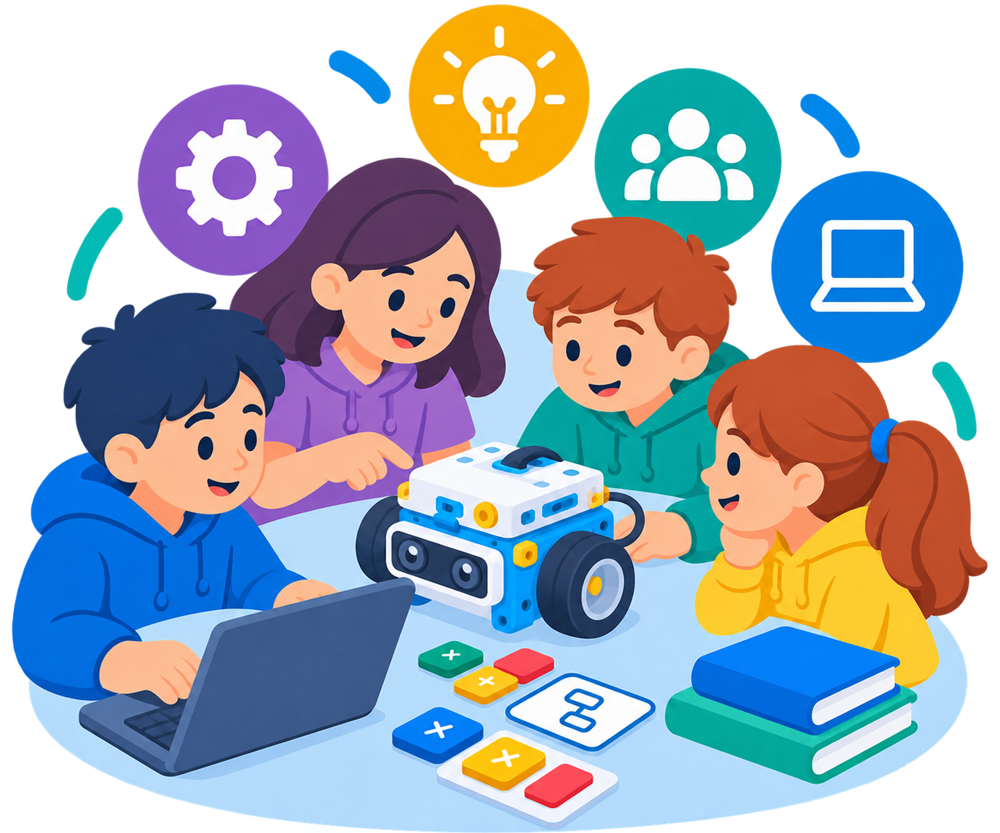

Situacions d'Aprenentatge
Propostes curriculars i reptes d'aula per connectar la robòtica i el pensament computacional amb contextos significatius.

Dues rutes, una decisió
“Quina informació ens ajuda a decidir per quina branca ha de continuar el tren i com comprovem si ha arribat al destí triat?”
El bucle de l’horta escolar
“Què es repeteix quan el tren completa una volta a l’hort i com podem anticipar quantes vegades passarà pel mateix punt?”
El tren que torna
“Com convertim llocs del nostre entorn en una història circular i expliquem quan acaba?”
Un camí tranquil fins a l’escola
“Quines situacions poden interrompre un trajecte i com podem representar decisions prudents en una maqueta sense confondre-la amb una senyalització real?”
Un concert de sons del pati
“Com podem crear una seqüència sonora breu inspirada en el pati i ordenar-la perquè cada so aparega en el moment acordat?”
Distàncies entre estacions
“Quin nombre de l’app necessita el tren per arribar a cada estació i com comprovem que ha fet el trajecte esperat?”
Hàbitats vius de l’Albufera
“Què necessiten els éssers vius per habitar un lloc, i com podem representar canvis que ajuden a conservar-lo?”
Missatges per a l’estació
“Quina informació necessita cada estació per rebre el tren i com podem transmetre-la amb sons o símbols que tot el grup entenga?”
Un pati per a cada oratge
“Com podem preparar un pati acollidor per a diferents condicions d’oratge?”
Com se sent el personatge del tren?
“Com podem escoltar diferents interpretacions d’un personatge de ficció i representar-les sense decidir què sent una persona real?”
Explorem les peces de la via
“Quins elements necessitem per preparar una ruta clara perquè el tren visite una estació i puga tornar al punt de partida?”
El tren es queda al taller
“Podem resoldre els mateixos reptes amb el cos, targetes i paper?”
Rutes amb decisions
“Com dissenyem una ruta pel nostre poble i la millorem quan apareix un problema?”
Històries que viatgen en tren
“Quina seqüència d’ordres permet contar una història clara amb el tren?”
Senyalització inclusiva en una maqueta
“Com podem representar dos estats d’un pas urbà amb senyals comprensibles per més d’un canal i provar-los en una maqueta?”
Un plànol geomètric amb MatataBot
“Quantes ordres necessitem per dibuixar el contorn d’una casa i com podem simplificar el programa quan repetim moviments?”
La fira de formes, nombres i estrelles
“Com podem convertir les ordres de MatataBot en una fira on classifiquem formes, escrivim nombres i dibuixem constel·lacions?”
Un repte cooperatiu de futbol de taula
“Com podem programar una ruta de passada perquè la pilota arribe a una zona acordada i tothom puga participar en el repte?”
Una ronda d’observació al parc
“Com podem programar una ruta que visite diversos espais i ens ajude a observar-los sense tocar ni molestar els éssers vius?”
La ruta dels llibres viatgers
“Com podem programar MatataBot per a visitar quatre espais mentre presentem un llibre fictici i una recomanació original?”
El pont de la marjal
“Com podem ordenar les escenes i les ordres perquè Tale-Bot travesse el pont i altres persones puguen seguir el nostre conte?”
Una dansa robòtica per a la festa de l’escola
“Com podem convertir un ritme propi en una seqüència de moviments, expressions i llums que el robot puga repetir?”
El laboratori de sensors de Codey Rocky
“Com pot Codey Rocky percebre senyals del seu entorn i convertir-los en respostes que siguen útils, clares i comprovables?”
El mapa de llum de l’aula
“Com podem comparar la llum de diferents espais amb un procediment repetible i explicar els límits de la mesura?”
Un mapa sonor per a llegir l’aula
“Com podem descriure i comparar l’ambient sonor d’un espai sense identificar qui parla ni confondre una lectura del sensor amb una mesura clínica o en decibels?”
Museu de jocs programats
“Com dissenyem una exposició de jocs que es puga entendre, provar, depurar i recórrer amb Codey Rocky?”
Repartiment amb una ruta segura
“Com pot un vehicle programat avançar per una ruta de repartiment i reaccionar davant d’un obstacle previsible?”
Arxiu de colors de l’horta
“Com podem descriure i classificar els colors que observem a l’horta sense confondre una lectura del sensor amb la identificació d’un objecte?”
Angles que dibuixen la ceràmica
“Com podem programar un gir interior concret i comprovar quin bloc d’angle necessita MatataBot per dibuixar cada triangle?”
Quatre animals, quatre visites i una ruta de memòria
“Podem recordar on hem deixat cada animal i programar MatataBot perquè hi torne sense que el robot veja ni arreplegue les peces?”
Del pla a la paraula: formes del marjal
“Com podem passar d’una xarxa plana a una forma 3D i representar una paraula amb una seqüència que el robot puga recórrer?”
Una benvinguda a la barqueta
“Com preparem MatataBot i una barqueta de paper en una mateixa línia perquè el robot hi arribe i faça sonar una salutació musical?”
El viatge d'una fruita: una ruta digestiva
“Com podem representar, programar i explicar el recorregut dels aliments sense confondre el mapa amb el funcionament real del cos?”
Un circuit de l'horta per a un cotxe de paper
“Com podem dissenyar un vehicle lleuger i un circuit de l'horta, i crear una seqüència de blocs que complete una volta?”
La collita que sona
“Com podem programar una ruta perquè MatataBot arribe a una o més peces de fruita, les acoste a la zona de recollida i faça sonar la celebració sense atribuir-li una pinça que no té?”
Dos parades, una ruta de nombres
“Com podem programar MatataBot fins a dues quantitats diferents i justificar quina és major, menor o igual?”
Constel·lacions de la marjal amb MatataBot
“Com podem representar una idea inspirada en la marjal com una constel·lació pròpia i comunicar-ne el recorregut amb instruccions clares?”
Contes de ruta pel marjal
“Com podem contar una història amb una ruta que el robot puga executar i una altra parella puga explicar sense que li revelem el relat?”
Un distintiu per a cada equip del marjal
“Com podem crear un distintiu que represente l’encàrrec del nostre equip i fer que una altra parella puga comprovar l’ordre de les formes amb MatataBot?”
Eixim d’excursió: una ruta amb encàrrecs
“Com podem completar tots els encàrrecs abans d’eixir, respectar l’ordre necessari entre preparar i menjar l’esmorzar, i trobar una ruta curta que una altra parella puga comprovar?”
Estacions de codi: del bloc al mapa
“Com podem passar d’unes ordres tangibles a una història i un mapa que una altra classe puga comprendre i recórrer?”
Del codi a un projecte del marjal
“Com podem crear una experiència de joc i descoberta del marjal amb ordres, música, mapes i una proposta pròpia?”
Un gelat geomètric de l’horta
“Com podem programar un triangle de mida adequada i convertir-lo en una creació de paper que una altra classe puga reconstruir?”
Parelles de fruita al mapa del mercat
“Com podem programar una ruta que connecte dues fruites iguals i justificar quina de les rutes vàlides és més curta?”
Patrimoni en ruta
“Com podem usar una targeta de país per trobar el lloc patrimonial corresponent i programar una ruta que no toque les altres targetes?”
Una ronda pel viver de la marjal
“Com planifiquem una ruta que passe al voltant de més d’un objecte i arribe a la bandera si MatataBot no pot detectar cap obstacle?”
Una ruta segura per la marjal
“Com podem guiar MatataBot fins a dos punts de la marjal sense travessar una zona protegida i explicar a un altre equip com ho hem aconseguit?”
Rutes i laberints de l’horta
“Com podem planificar i provar una ruta tangible, primer amb ordres simples i després amb paràmetres, bucles i funcions?”
Sons que dibuixen la marjal
“Com podem representar i ordenar sons més aguts i més greus perquè una altra classe puga llegir i interpretar una peça pròpia?”
Tresors entre séquies
“Com podem dissenyar un laberint clar i programar MatataBot per visitar un tresor, i després dos, en una sola seqüència?”
Paraules en ruta per la marjal
“Com podem comunicar una paraula, localitzar-ne la imatge en un mapa i corregir el programa si MatataBot arriba a una altra targeta?”
Espies escolars: missatges i privacitat
“Com podem transmetre un missatge de manera que el destinatari el puga recuperar, i què ens ensenya això sobre la privacitat digital?”
Caretes de la plaça
“Com pot una expressió digital ajudar-nos a contar una història, i per què no és suficient per saber com se sent una persona?”
Alertes per al bosc i l’hort
“Com podem enviar un avís de protecció i representar un sensor de cultiu sense exposar la placa a l’aigua o al sòl?”
Missió de robòtica cooperativa
“Com podem dissenyar un robot fiable que complete missions de cura de l’entorn i explique amb proves les decisions de l’equip?”
Una erupció en píxels
“Com podem descompondre un procés en fotogrames i repetir-los en una animació LED comprensible?”
Animacions de l’aiguamoll
“Com podem explicar una observació de la natura amb una icona LED i una animació programada?”
Art de la natura en píxels
“Quins trets d’una forma natural podem conservar quan la representem primer amb materials i després amb cinc per cinc píxels?”
Una aula amb opcions sensorials
“Com podem crear un recurs visual opcional i configurable que ajude a fer més previsible una rutina de l’aula?”
Clau segura, dades protegides
“Com podem explicar els riscos digitals i provar un algorisme de contrasenyes amb dades completament fictícies?”
Comptem residus amb cura
“Com podem dissenyar un comptador de micro:bit que registre residus per categoria i ens ajude a fer una proposta responsable?”
Dades que parlen del pati
“Com podem recollir dades de l’entorn del pati i transformar-les en un prototip útil sense exposar informació personal?”
La llum que usem
“Què ens diuen les lectures de llum sobre l’ús de la il·luminació i quina proposta podem defensar amb dades?”
Fonaments per a pensar amb ordinadors
“Com passem d’un problema quotidià a un algorisme precís, un programa provat i una explicació de com cooperen maquinari i programari?”
Un temporitzador d’activitats responsable
“Com podem crear un temporitzador de maqueta amb aprenentatge automàtic i explicar amb honestedat quan falla?”
Primer tast d’intel·ligència artificial
“Com podem explicar què és la IA i provar si un model reconeix dos moviments que no ha vist abans?”
Una maqueta que aprén patrons
“Com podem fer que una maqueta reconega patrons de moviment, provar-ne els errors i explicar per a qui funciona?”
Moviment cooperatiu i dades
“Com podem crear un selector de jocs de moviment amb variables i atzar sense convertir les dades en puntuacions personals?”
Un provador de materials
“Com podem usar una entrada de micro:bit i una condició per investigar quins materials condueixen electricitat?”
Sis projectes per a la biblioteca
“Com podem combinar entrades, eixides, sensors i aleatorietat per crear sis projectes útils i lúdics per a la biblioteca?”
Reptes micro:bit per a cuidar l’entorn i les persones
“Quin prototip podem dissenyar per a respondre a un repte real sense prometre una protecció que la tecnologia no pot garantir?”
Ritmes del pati en codi
“Com podem convertir una idea rítmica en instruccions que altres persones i la micro:bit puguen interpretar?”
Paraules en targetes digitals
“Com podem dissenyar una targeta digital que ajude a recordar vocabulari amb icones, seqüències i temps d’espera?”
Tecnologia per al benestar quotidià
“Com podem dissenyar una ajuda tecnològica senzilla que facilite una rutina de benestar sense vigilar ni diagnosticar ningú?”
Xifres que viatgen
“Com podem codificar i descodificar un missatge amb un algorisme, i quins límits té el xifrat de Cèsar?”
Ruta Saludable pel Mercat del Barri
“Com podem planificar la compra de fruites i verdures de temporada al mercat gastant el pressupost just i fent el camí més curt?”
Què pot saber un sensor de color?
“Podem crear una màquina que classifique mostres de prova i explicar amb honestedat què no sap identificar?”
Un ajudant de receptes en maqueta
“Com podem prototipar un ajudant mecànic per a una tasca de cuina i fer que siga fàcil i segur d’utilitzar?”
Una benvinguda amb moviment
“Com podem dissenyar una màquina amb SPIKE Prime que reba les persones amb un moviment amable i fàcil d’entendre?”
El centre logístic de la biblioteca
“Com podem preparar, traçar, protegir i verificar un paquet de llibres en una maqueta sense exposar dades personals?”
La desfilada de les caminades impossibles
“Com podem fer avançar un model LEGO SPIKE Prime sense rodes i quins canvis de les potes n’alteren el moviment?”
El repte de les tres pistes
“Com podem crear un joc de pistes que responga a una seqüència de condicions sense confondre una simulació amb una protecció real?”
El pati: dades, ritme i decisions
“Com podem dissenyar programes amb variables i dades per a un festival escolar, comprovant la fiabilitat de cada decisió?”
Depurar per arribar-hi
“Com distingim un error de muntatge d’un error de programa i com demostrem que una ruta autònoma funciona de manera fiable?”
Dissenyar, provar i compartir
“Com transformem una idea útil en un prototip provat i en una explicació que ajude altres persones a valorar-la?”
Eines per a una missió de servei espacial
“Com podem dissenyar una eina que ajude una persona amb guants a moure peces o guiar un cable en una reparació simulada?”
La fira de les torres de gots
“Com podem planificar, programar i millorar una ruta que evite obstacles i tombe una torre de gots amb seguretat?”
Robots que ens ajuden
“Què fa que una màquina siga un robot i com podem combinar maquinari, programa i treball en equip per resoldre una necessitat real?”
Camins, habilitats i possibilitats
“Quines persones, competències i itineraris formatius fan possible una fira tecnològica accessible, i com podem investigar opcions sense predir el futur de ningú?”
Lògica per a una escola oberta
“Com pot una maqueta llegir una seqüència, aplicar regles explícites i respondre a una ruta sense tractar-la com un sistema de seguretat real?”
Laboratori de solucions accessibles
“Com podem identificar una necessitat, prototipar alternatives i millorar una solució accessible amb proves justes?”
Casa eficient i collita delicada
“Com podem automatitzar una acció quotidiana de menor impacte i dissenyar una eina que manege el fruit amb suavitat?”
Un prototip per a un repte real
“Quin problema concret de la comunitat podem investigar i representar amb un prototip SPIKE Prime, i quines proves necessitem per explicar-ne el valor i els límits?”
Provar abans de decidir
“Quines proves i dades necessitem abans de dir que un prototip funciona o que un robot és millor per a una tasca?”
Un mosaic de moviments repetits
“Com podem programar una màquina de mosaic de taula amb patrons repetibles, controlar quantes vegades actua i evitar que un bucle continue quan ja ha acabat la tasca?”
Missatges que arriben
“Com podem crear un senyal escolar inclusiu amb Python, llum i so, i comprovar que el missatge s’entén en diferents condicions d’ús?”
Una decisió, dues comprovacions
“Com podem combinar comprovacions en Python per decidir quan una maqueta de préstec de material pot mostrar una resposta, i com provem que no confon casos?”
Dades que orienten el trajecte
“Com podem recollir dades amb sensors SPIKE, comprovar-les i usar càlculs en Python per planificar un trajecte simulat de manera comprensible?”
Python: el laboratori de depuració
“Com podem localitzar si un comportament inesperat prové del disseny, d’una connexió, d’un error de sintaxi o de la lògica del programa Python?”
Funcions que fan equip
“Com podem dividir el triatge d’una jornada escolar en accions reutilitzables i ensenyar un prototip SPIKE a executar-les amb dades diferents?”
Fira de jocs amb regles clares
“Com podem crear un joc de fira amb regles transparents en què una condició Python canvie una resposta del model, el marcador siga fiable i tothom puga participar?”
Paraules en llista, històries en ruta
“Com pot una llista Python organitzar dades en ordre, comparar col·leccions i convertir senyals de color en peces d’una història col·laborativa?”
Moviment amb motiu
“Com podem programar un mecanisme SPIKE que complete moviments útils i repetibles en una ruta de transport simulada, i demostrar-ne la precisió amb proves?”
Un trajecte útil, un prototip que aprén
“Com podem dissenyar i programar en Python un prototip SPIKE que transporte materials de maqueta per una ruta escolar definida, i comunicar amb dades què resol i què encara no?”
Una parada a temps
“Com podem fer que un prototip SPIKE prime una ordre amb sensor de força, reconega una zona d’aturada amb distància i transporte una càrrega lleugera sense eixir del recorregut?”
Energia en una pista de proves
“Què podem inferir sobre energia i moviment amb un vehicle de maqueta, i com descrivim l’error de les nostres mesures?”
Un indicador de reg per a l’hort escolar
“Com podem transformar la previsió de pluja d’una setmana en un indicador calibrat i útil per a prendre una decisió sobre una maqueta d’hort?”
Reptes cooperatius de taller
“Com podem generar idees, explicar per a què serveixen i convertir-les en un repte mecànic cooperatiu?”
Sensors al servei de la biblioteca
“Com pot un robot detectar condicions, actuar amb seguretat i coordinar-se amb altres equips sense confondre la simulació amb un servei real?”
Titelles mecàniques de l’Albufera
“Com podem transformar el gir d’un motor en el moviment expressiu d’una titella que conta una història local?”
Mesurar per decidir
“Com fem servir variables i mesures repetibles per a decidir quina ruta de servei escolar convé en una maqueta?”
Un indicador per a llegir dades de vent
“Com podem convertir la velocitat prevista del vent en una representació calibrada, comparable i comprensible?”
Una ruta de contes per la biblioteca
“Quina ruta pot seguir el robot per visitar tres espais de lectura, i com podem inventar una història diferent en cada parada?”
El camí de les llavors
“Com podem preparar una ruta per a cada llavor de paper i contar què necessitarà la planta quan comence a créixer?”
Dibuixem un pati que convida a jugar
“Quines formes i espais podem representar perquè el plànol del pati siga fàcil d’entendre i permeta més d’una manera de jugar?”
El mapa sonor del barri
“Com podem representar sons i veus d’un barri imaginari sense confondre el mapa amb una gravació real del nostre entorn?”
Un barri que es mou amb cura
“Com podem traçar un recorregut pel barri que siga fàcil de seguir, segur i còmode per a diferents persones?”
La fira de descobertes de l'escola
“Com podem preparar una fira on cada ruta del robot convide a observar, comptar, conversar i crear?”
Explorem el barri amb Tale-Bot
“Com podem utilitzar una ruta programada per a observar, ordenar i contar històries sobre el nostre entorn?”
Missions de comunitat amb Tale-Bot
“Com organitzem un recorregut que visite diversos llocs i conte una història que el grup puga canviar?”
Ordres en acció amb Tale-Bot
“Com podem donar instruccions clares perquè Tale-Bot arribe, salude, dance i complete una missió?”
Patrons en ruta amb Tale-Bot
“Quina part d’una ruta es repeteix i com podem expressar-la amb menys ordres sense perdre precisió?”
El rastre del corral
“Com podem preparar un mapa amb files, columnes i una orientació inicial perquè Tale-Bot trobe cinc animals amb ordres cap avant que puguem comptar i comprovar?”
La línia verda: un tren per al barri
“Com podem connectar l'horta, el mercat i l'escola amb un recorregut que el tren puga completar i que totes les persones entenguen?”
No hi ha situacions amb aquests filtres. Prova de canviar-los o restablir-los.